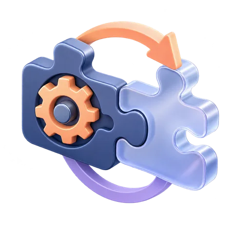

PPM 헤더와 RGB 픽셀 채널 읽기
작은 텍스트 이미지의 크기·표본 개수·색 채널을 읽고 메타데이터와 실제 표본을 구분합니다.
시간은 설치 경험에 따라 달라지는 저자 추정입니다. 목표별 경로에서 핵심 차시를 고르거나 이 분야를 순서대로 진행하세요.
시작 전, 내 준비 상태 확인하기
화면에 보이는 문자열과 파일의 원시 바이트는 같나요?
준비 환경과 선행 학습 확인
오프라인 · Python 3.10 이상 · 표준 라이브러리
- misc ZIP을 풀고 해당 폴더로 이동합니다. Linux/macOS는 python3, Windows PowerShell은 아래 python3를 py -3로 바꿔 실행하세요.
- 원본은 보관하고 변경 과제에는 사본을 사용합니다. 제공한 작은 합성 입력만 오프라인에서 다루며 계정·외부 자원·실제 개인정보를 사용하지 않습니다.
막히는 개념만 연결해서 복습하세요. 선행 차시 완료 여부로 강의를 잠그지 않습니다.
먼저 이해하기
P3는 RGB 픽셀 값을 텍스트 숫자로 적는 plain PPM 형식입니다. 헤더에는 매직 P3, 가로·세로, Maxval이 있고 이후 픽셀마다 빨강·초록·파랑 표본이 세 개씩 이어집니다. 이 차시는 직접 작성한 네 픽셀 자료를 읽는 실습이며 사진을 편집하지 않습니다.
RGB 표본이 픽셀 색으로 이어집니다
그림 설명 읽기
sample-p3.ppm의 2×2 표본을 행 순서대로 그립니다. 위쪽 행은 빨강 (255, 0, 0)과 초록 (0, 255, 0), 아래쪽 행은 파랑 (0, 0, 255)과 흰색 (255, 255, 255)입니다. 오른쪽에는 0부터 시작하는 열·행 좌표와 RGB 값을 같은 순서로 표시합니다. 이 표본의 최댓값은 255입니다.
sample-p3.ppm은 2×2, Maxval255이며 빨강·초록·파랑·흰색 네 픽셀을 담습니다. 필요한 숫자는 2×2×3=12개이고 각 채널의 합은 510입니다. 첫 픽셀은 (255,0,0)이므로 채널 순서를 BGR이나 다른 배열로 가정하면 해석이 달라집니다.
헤더의 크기와 주석은 EXIF 촬영 시각이나 카메라 신원과 다릅니다. 주석의 임의 문장을 사실로 보증하지 않으며, PPM 자료만으로 실제 장면의 진실성이나 제작자를 판정할 수 없습니다. 색 표본의 의미도 명세의 감마·색 공간과 응용 변형을 고려해야 합니다.
제공 파서는 P3 한 이미지, 1~64의 크기, Maxval1~255라는 교육 계약만 지원합니다. 숫자 개수와 범위를 검사하지만 임의의 거대한 악성 이미지에 안전한 범용 디코더는 아닙니다. 이 작은 신뢰 자료를 대상으로 표본 개수·채널·메타데이터 차이를 확인합니다.
실습 자료
ZIP을 먼저 풀고 README를 확인하세요. 같은 폴더의 파일을 함께 유지합니다.
따라 하며 관찰하기
먼저 수정하지 않은 원본으로 아래 기준 예제를 확인하세요. 원본 폴더를 보관하고 전체 폴더의 작업 사본에서 다음 변경 단계를 진행합니다. 아래 예상 결과는 변경 전 기준입니다.
처음 상태의 전체 예제
python3 media_tools.py ppm변경 전 예상 결과와 해석
magic=P3 width=2 height=2 max=255 pixels=4 red-sum=510 green-sum=510 blue-sum=510 first=(255, 0, 0)
이제 단계별로 바꾸고 관찰하기
헤더와 표본 수 연결
P3, 2, 2, 255를 읽고 뒤의 숫자 12개를 네 RGB 픽셀로 나눕니다.
python3 media_tools.py ppm관찰할 결과magic=P3 width=2 height=2 max=255 pixels=4 red-sum=510 green-sum=510 blue-sum=510 first=(255, 0, 0)
첫 픽셀 값만 바꾸기
사본의 첫 픽셀에서 빨강 255만 0으로 바꿉니다. 헤더와 나머지 11개 채널 값은 유지합니다.
python3 media_tools.py ppm --source sample-dark.ppm관찰할 결과pixels=4 red-sum=255 green-sum=510 blue-sum=510 first=(0, 0, 0). 헤더는 원본과 같습니다.
개수와 범위 오류 구분
다른 사본에서 마지막 채널 값 하나를 삭제합니다. 또 다른 사본은 값 255를 256으로 바꿉니다.
python3 media_tools.py ppm --source sample-short.ppm python3 media_tools.py ppm --source sample-range.ppm관찰할 결과각각 INVALID: sample count/range, 종료 상태 2
직접 바꾸고 확인하기
사본에서 첫 빨강 픽셀을 (0,0,0)으로 바꾸고 채널 합을 예측하세요. 다른 사본에서는 마지막 숫자 하나를 지워 길이 검사가 필요한 이유를 확인하세요.
막혔을 때 힌트 보기
한 픽셀은 숫자 세 개입니다. 한 채널만 바꾸는 것과 픽셀 수를 바꾸는 일을 구분하세요.
과제 해설과 예시 답안 보기
- 첫 픽셀은 빨강만 255였으므로 검정으로 바꾸면 빨강 합만 510에서 255로 줄어듭니다.
- 12개가 아닌 11개 표본이나 Maxval 밖의 256은 규약에 맞지 않아 거부합니다.
- 결과는 직접 작성한 픽셀 데이터의 해석이며 촬영자·촬영 시각·실제 장면의 증명이 아니라고 표시합니다.
결과를 판단하는 기준
헤더·표본 개수·RGB 순서·값 변경과 자료 출처의 한계를 함께 기록합니다.
학습 기록: 사용한 환경과 명령 → 바꾸기 전 예상 → 실제 결과 → 차이의 이유를 남기세요.
도움 없이, 조건을 바꿔 보기
P3 픽셀의 R과 B 채널만 맞바꾸고 크기와 샘플 수가 유지되는지 확인하세요.
- 위 해설을 닫고 예상 결과와 근거를 먼저 적습니다.
- 코드·원시 자료·문서 근거로 확인하고 예상과 실제 차이를 설명합니다.
- 새 반례 하나를 만들고 무엇까지 확인했는지 기록합니다.
시도한 뒤 판단 기준 읽기
픽셀 수는 width*height, 샘플 수는 그 3배입니다. 채널 순서를 바꿔도 크기는 같고 색 의미가 달라집니다.
| 확인할 역량 | 남길 근거 |
|---|---|
| 개념 | RGB 표본 개수와 채널 합을 검증했다. — 자기 말로 설명 |
| 실행·관찰 | 헤더/주석과 실제 신원 증거를 구분했다. — 명령·입력·출력 또는 자료 위치 |
| 조건 변경 | 독립 과제의 예상과 결과, 판단 기준과 다른 점 |
| 한계·전이 | 새 반례, 확정할 수 없는 결론, 다음 확인 자료 |
각 항목: 0 근거 없음 · 1 설명만 가능 · 2 재현 근거 있음. 모든 항목의 근거를 갖추는 것을 목표로 하세요. 1–3일 뒤 예제를 닫고 다시 풀어보세요.
이 분야의 과제 기록 양식 받기 ↓이 정도면 다음으로
이해한 내용을 점검하기
답을 고른 뒤 이유까지 확인하세요. 점수는 저장하지 않습니다.
내 결과물 확인하기
- RGB 표본 개수와 채널 합을 검증했다.
- 헤더/주석과 실제 신원 증거를 구분했다.
위 기준을 결과물로 확인한 뒤 완료로 표시하세요. 다음 차시를 잠그지 않습니다.
이 차시의 참고 문서
무료로 읽는 공식 참고 문서입니다. 필요한 절을 찾아 본문의 설명과 함께 확인하세요.
학습 기록 · 백업과 가져오기
내 브라우저에 저장되는 학습 기록같은 사이트·브라우저에서 공유합니다. 다른 기기와 자동 동기화되지 않습니다. 가져오기는 완료 기록을 합치며 현재 완료 기록을 지우지 않습니다.